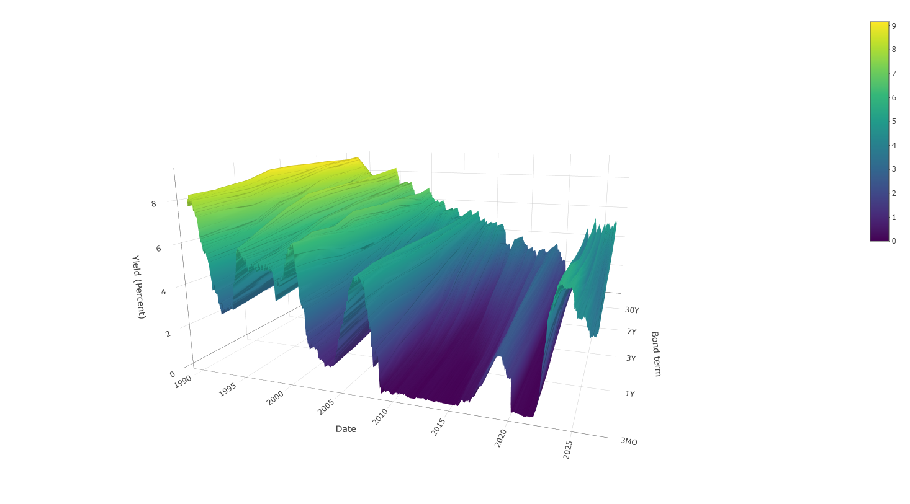

Selected Output
Charts and analysis generated in R as part of research and data automation work.
[

]
[ Long-Term Treasury Yields ]
[ Visual in R showing treasury yields across all available tenors over time. Inspired by a New York Times analysis written in 2015. ]
[  ]
]
]
[ Sahm Rule Recession Indicator ]
[ Visual in R showing the level of the Sahm Rule recession indicator from 2000 to June 2026. I wanted to experiment with pulling data from various APIs and joining them together when creating a single chart. ]